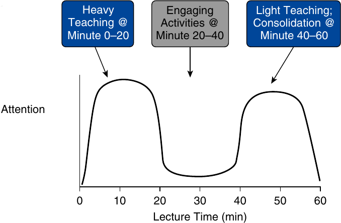
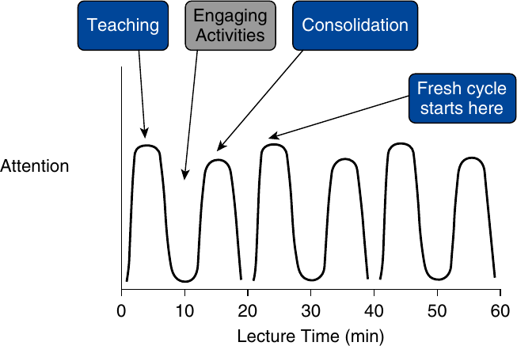

Course Overview
AERO3261
Your lecturer
- Bachelor in Aerospace Eng. (Sapienza)
- Master in Space Eng. (Sapienza)
- II Level Master in STS (Sapienza)
- PhD in Theoretical and Applied Mechanics (Sapienza)
- Post-doc at SPBGU, Russia
- Ass. Prof. at SPBGU, Russia
- Post-doc at UniMelb
- Ass. Prof. at Macquarie University
- Senior System Modelling Eng., Gilmour Space
Course objectives
Design of Rockets and Space Launch Vehicles
You will:
- understand rocket and space launch vehicle systems
- navigate the typical LV design process
- define and evaluate mission requirements and design constraints
- define critical project reviews and milestones
- define and perform test campaigns
- gain hands-on experience about sub-system modelling using analytical and/or computational tools (e.g. structural analysis, fluid mechanic simulations, fluid-structure interactions, etc.)
Lecture plans
- Introduction to Launch Vehicles (LVs)
- History of rocketry & LVs
- Mission requirements
- Propulsion
- Performance estimation
- LV trajectory optimization
- LV structures
- LV ground, transportation & ascent loads
- Launch environment
- Stability & Instabilities
- LV Manufacturing
- LV systems
- Testing
- Failures
- LV Financial analysis
Moodle & Forum
The Moodle page contains:
- assignments (individual, group project & exam here),
- lecture recordings,
- link to lecture materials (https://github.com/lkampoli/DoRSLaVe),
- link to forum.
The forum will be used for announcements and for questions about the course.
If it is something confidential, then email me.
Learning activities
Learning activities
The learning activities of this course involve the following:
- Lectures:
- Preparing for & engaging in each week’s lecture
- Self-study:
- Performing reading of relevant textbook chapters
- Doing exercise questions (conceptual and applied)
- Labs:
- Actively engaging in the lab sessions
- Assignments:
- Group project
- Seminars:
- One seminar per student presented during the course
Lecture’s format
The line depicts the level of audience attention during a 60-minute lecture and includes periods of high attention and low attention. The blue boxes highlight the proper timing for instruction (prime time) relative to the level of attention, and the gray box (down time) highlights the appropriate placement for engaging activities to activate the audience.

To counteract low attention periods, a 60-minute lecture will be divided into three segments lasting 20 minutes each. The engaging activities are then placed in the middle of each 20-minute cycle.

Contact hours
The lectures are 2 hours each week.
The tutorials are a mix of conceptual, theoretical questions, pen and paper exercise, and hands-on coding and simulation sessions.
Make sure to use this time to ask your tutor for guidance on your project.
In later weeks, the tutorials will focus on project help and exam preparation.
Consultation hours can be online or in-person and scheduled weekly (see Moodle for Zoom link).
Exercises
On the website, I have added longer exercises for you to try.
Try to finish them around the week they are released.
These will be useful practice for the final exam.
Assessment
Course Grade Breakdown
- Individual Assignments (30%)
- Group Project (35%)
- Exam (30%)
- Seminar (5%)
Assignments
There are 15 assignment tasks, each worth 2% each.
The best 10 of 15 being counted, adding up to 30%.
These are formative assignments, so are marked.
They are due on Friday at noon in each week.
I’ll release them at least 10 days before the due date.
Project
Group project over the term. You will:
- design a space mission program
- design a space launch vehicle system
- define and evaluate mission requirements and design constraints
- perform preliminary feasibility studies
- define critical project reviews and milestones
- define and perform test campaigns
- model sub-systems using analytical and/or computational tools
- verify compliance
- write a discussion of the results.
Project components
The deliverables for the project will include:
- Report Part 1 (sub-systems) due at noon on Friday in Week 5 (15%),
- Report Part 2 (system) due at noon on Monday of Week 10 (15%).
- Recorded presentation due at noon on Friday in Week 15 (10%),
Due dates
All due dates are at noon of the following weeks (“IA” = Individual Assignments, “GP” = Group Project):
- IA1
- IA2 (Fri)
- IA3 (Fri)
- IA4 (Fri)
- IA5 and GP Report I (Fri)
- IA6 (Fri)
- IA7 (Fri)
- IA8 (Fri)
- IA9 (Fri)
- IA10 and GP Report II (Fri)
- IA11 (Fri)
- IA12 (Fri)
- IA13 (Fri)
- IA14 (Fri)
- IA15 and GP Presentation (Fri)
Late policy
If submitting late, you must apply for special considerations through The University of Sydney central system. If you ask me for an extension, I will refer you to the special considerations system.
Without special consideration, late assignments will not be marked. I have noticed that special considerations will not be granted for assignments tasks if you can still get full marks without that task.
For the project, the general policy is:
Late submission will incur a penalty of 5% per day or part thereof (including weekends) from the due date and time. An assignment will not be accepted after 5 days (120 hours) of the original deadline unless special consideration has been approved. Dura lex, sed lex.
Final exam
The exam will test the concepts presented in the lectures.
The exam is a take-home format, and thus will be open book and open notes.
You’ll be given 5 exercises randomly selected from the lecture material, and will work individually to complete it.
Seminars
Each student is asked to deliver a seminar presentation of 30-45 minutes to the rest of the students within the timeframe of the course. The topic of the seminar can be proposed by the me or by the student. A calendar will be provided on the Forum page.
Past student feedback
Best parts of the course? Project
“Having an open ended project allowed me to do something I had interest in.”
“The assignment was really good as it gave you ownership of what problem to choose and investigate. The course itself is super interesting and insightful, and really practical since time isn’t wasted on coding but rather the concepts and how to apply these models.”
The style
“I think the hands–on approach to learning how to code up CFD solver was quite useful. Not going too deeply into the inner workings models (some ways this might happen would be deriving certian formulas and proofs of certian theorems) allowed us to devote more attention to learning how worked in an intuitive way. This perhaps is more helpful for a first timer to the subject area. I think that being too entrenched in the theorem–and–proof style of learning, though instilling rigor to the course as well as being entertaining to the geniuses and masochists, can make content too heavy and turgid for most. Having a lighter approach is more suitable to the needs of us students and allows us to gain a sufficient grasp of more types of numerical CFD solvers.”
Improvements
What could be improved?
“More time for the project and removal of the final exam. I believe this project can reflect the real world even more if we had more time.”
There were others related to deadlines and number of assignment tasks, which were already implemented.
The next slides are answering the question: Is there anything you wish you could have told your former self before starting to help them be prepared to learn these topics?
Brushing up on Maths, Physics and Coding
“In hindsight, a piece of advice I would give my past self before starting this course would be to have a solid grasp of basic mathematical manipulations. I believe reinstating such prerequisites would greatly enhance the ability for students to fully thrive in this course.”
“Something I wish I could have told my former self before taking this course, was to brush up on general Fortran/C++/Python skills”.
Time management
“If I could give advice to my former self it would be to start the project early and try to read ahead. Looking forward, I hope to continue to be able to learn more about propulsion and rocket science and am glad to have been exposed to resources like real numerical solvers.”
“Something that I would have told my former self before starting is to not fall behind in the early stages of the term as the first couple weeks really builds the foundation for the remaining weeks of the term. Because I fell behind earlier, it was quite difficult for me to catch up during the rest of the term.”
“Moreover, I would still ask myself to start assignments earlier instead of leaving until the last minute.”
Planning
“If I could tell my former self something before starting, it would be to really focus on understanding the concepts first before jumping into coding the techniques. I think I could have saved a lot of time in the assignment if I spent more time understanding the concepts in more depth instead of rushing into the coding aspect of things.”
“In terms of the assignment and coding I would have told my former self to do things properly the first time rather than doing a rough job and having to go back and fix it. Going back and altering early code can lead to really frustrating problems later so I would have told myself to not be lazy in the initial stages because it makes life a lot easier towards the end of the project.”
Patience
“If I could go back and advise my former self before starting the course, I would emphasise the importance of patience. Rocket science can be quite challenging, and it’s easy to get discouraged when facing complex models and dependences. I would advise myself to just clear my mind then come back when this happens, rather than rack my brain for hours to no avail.”
“If I was give some advice to my former self, I would say that coding takes a long time to master and be prepared to put in the time and effort. There were some assignments which I really struggled to understand the concept, resulting in many errors (some of which were just caused by language behaviour I was not aware of) and many hours of debugging.”
Don’t panic
“If I could go back to tell my former self (when I was struggling to work with the first ever assignment), I would tell myself that do not panic and read the lecture slides carefully. The slides are actually extremely helpful in tackling the assignment questions.”
Comments put in the wrong form
Not about the course but about me: